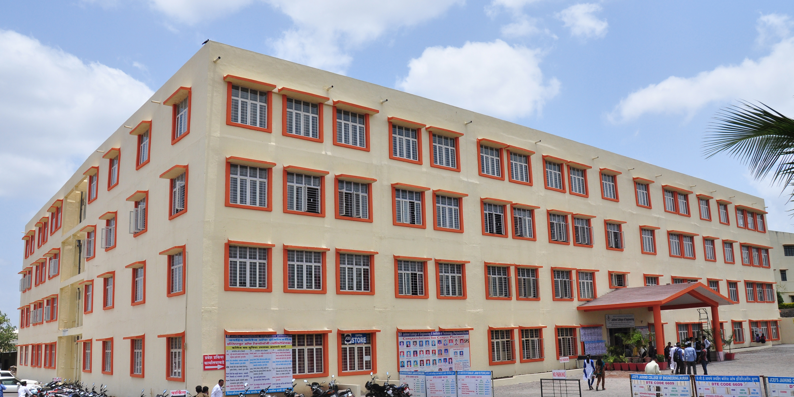

Jaihind College Of Engineering
The ever revered Shivneribhusan Hon’ble President (Late) Tatyasaheb Gunjal has been a perpetual inspiration for all of us. He was a visionary who epitomized success in all walks of life. He was a successful businessman, impactful politician, noteworthy social-activist and a dedicated educationist. His rise from the edge to riches was not any surprise or chance. It was all the struggle and strong willingness to excel made him a great achiever. His leadership and guidance were motivating and confidence booster for all of us. Hon’ble Tatyasaheb Gunjal was a self-made man who was a very different from most other achievers.